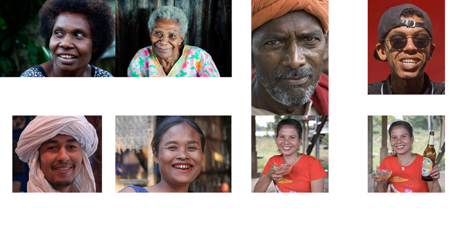

RT-DETRv2 is RT-DETR, refined. Same ResNet-18 backbone, same 80 COCO classes, same NMS-free,
one-pass, real-time design — but the decoder is redesigned: its sampling points are
selectable per feature scale (a "flexible decoder"), and the internal
grid_sample is swapped for a discrete sampling operator that
exports and deploys cleanly. Trained with a bag-of-freebies recipe, it lands
cleaner, better-localised boxes at the same inference cost as v1. Race the two
side by side, all on your device.
Decoder sampling points selectable per scale; grid_sample → discrete sampling (clean ONNX export); bag-of-freebies training — better accuracy at the same speed & size
WebAssembly, Web Workers, Canvas, getUserMedia, FileReader — all Baseline widely available
Run it
Pick or drop an image and hit Detect — or start the webcam and watch it box the
world in real time. RT-DETRv2 runs once at a low floor; the score slider then filters the boxes
live without re-running the model.
Drop an image here, or click to choose

No webcam available here.
This device or context didn't grant camera access. The
model still works on stills — pick a sample above and Detect.
backend –latency –fps –objects shown –
See inside
RT-DETRv2's decoder emits a fixed set of predictions each pass — one per query — and, unlike
anchor detectors, it does not run a non-maximum-suppression pass to merge
overlapping boxes. The list below is what the model returned directly: label, softmax
confidence, and box as x, y, width, height in the image's own pixels, filtered
only by your score slider.
Run detection to see the raw boxes.
total above floor –shown at threshold –distinct classes –
#
label
score
x
y
w
h
Head-to-head — RT-DETRv2 vs RT-DETR v1 (same backbone, same size)
This is the honest comparison. Both are r18vd (ResNet-18, ~21–22 MB, NMS-free, real-time) — so
it is not a size or speed story like v1 vs heavy DETR.
The only difference is the decoder redesign and training recipe. Run
RT-DETR v1 on the current image and
compare, box for box, at your chosen threshold: how many objects each keeps, and how their
confidences line up. Loading v1 downloads its own ~22 MB the first time.
Why it matters
RT-DETRv2 is the drop-in upgrade for anyone already using a real-time DETR: same size, same
latency budget, same one-call API — but a decoder that localises more cleanly and a discrete
sampling operator that exports to ONNX without the deployment friction of grid_sample.
In the browser that last point matters: it is exactly why this q8 build runs in a tab at all.
Better boxes, free of charge — accuracy gains at the same speed and size; no new hardware, no bigger download.
Deploy-anywhere export — discrete sampling makes the ONNX clean, so it runs on the WASM backend on any device.
Real-time counting & camera-aware UX — count people, cars or stock from a live feed, nothing uploaded, at frame rate.
A fair upgrade path — swap v1 → v2 and measure the difference on your own images, box for box.
This page runs the model once at a low floor threshold (0.05) inside a Web Worker, caches every
box, and filters the cached list as you drag the slider — so the slider is instant and never
re-runs inference. The webcam loop grabs a frame, detects it, and only schedules the next after
the last finishes, so it never piles up work or blocks the page.